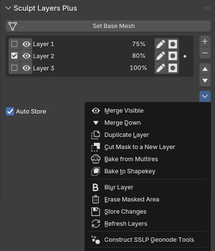
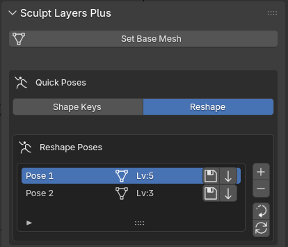
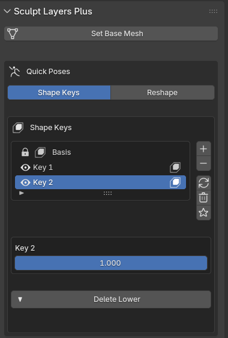
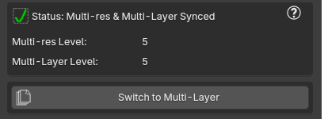

Simple Sculpt Layers Plus
Professional Non-Destructive Sculpt Layer System for Blender
Version 1.0
Blender 4.5
Blender 5.0
Blender 5.2
📖 Overview:
Simple Sculpt Layers Plus (SSLP) emulates a professional sculpt layer system by storing vertex offsets relative to a true base mesh.
Provides non-destructive sculpting workflows similar to ZBrush, with support for multi-resolution sculpting,
quick poses storage, and shape key management.
📦 1. Installation
- Download the addon (
Simple_Sculpt_Layers_Plus.zip)
- In Blender, go to Edit → Preferences → Add-ons
- Click Install from Disk and select the
Simple_Sculpt_Layers_Plus.zip file
- Make sure to enable the addon by checking the box next to Simple Sculpt Layers Plus
- The panel will appear in the Viewport Side Panel (N) → Sculpt Layers + (in Sculpt Mode)
ℹ️Note: Inside the addon preferences, you can decide in which tab the panel would be
🧱 2. Multi-layer

Overview: The multilayer system allows you to stack sculpting passes non-destructively.
Each layer stores vertex offsets relative to the base mesh.
Set Base Mesh
Stores the current mesh state as the foundation for all sculpt layers. Every mesh is required to have a base mesh before user can start working with the Multi-Layer panel
Auto-Store
Auto stores the selected layer's data - only if changes were detected
Add Sculpt Layer
Creates a new empty layer at the top of the stack, and enables it
Rename Layer
Click on the pen 🖋️ icon next to each layer, to change its name
Mask Layer
Click on the mask [●] icon next to each layer, to mask only the vertices that are affected by that layer
Toggle Layer
Click on the checkbox ☑ next to each layer to set it as the active (selected) layer
ℹ️ Only one layer can be selected at a time
Toggle Visibility
Click on the eye 👁 icon to show or hides that layer in the viewport
ℹ️ ALT + click on the eye icon to isolate the layer
⠀⠀ ALT + click again to restore visibility status of layer stack
Set Layer Strength
Click on the percentage % figure next to each layer, to control how much that layer will contributes to the overall mesh
ℹ️ 0% to 100% is the soft limit. However, you can type in any value between -1000% to 1000%
Delete Sculpt Layer
Removes the selected layer and its associated vertex offset data (attribute)
Move Sculpt Layer Up/Down
Moves selected layer up/down in the stack. Use when you want to merge down two specific layers
Merge Visible
Merges all the visible layers in the stack with the selected layer
Merge Down
Merges the selected layer with the one below
Duplicate Layer
Duplicates the selected layer
Cut Mask to New Layer
Extracts the selected layer's data - that lies within the masked area - into a new layer
ℹ️ Sensitive to mask strength
Bake from Multires
Bakes the current Multi-res mesh (if exists) into a new layer
ℹ️ The visbility status of the layer stack will affect the baked result. This is done purposefully, so the user can choose which comprising part of the multires he wants to isolate into a new layer (since after converting the multilayer to multires: the multires = the sum of all visible layers). Especially useful if changes were made to the multires mesh, that user wants to capture in layer form, or if user wants to bake the multires mesh to a shapekey mesh
Bake to Shapekey
Bakes the current Multi-Layer mesh into a shapekey within a new mesh (with a "_shapekey" suffix added to its name)
Blur Layer
Blurs the selected layer
Erase Masked Area
Deletes all the data of a selected layer, that is found within the masked area
ℹ️ Sensitive to mask strength
Store Changes
Store any changes made to the selected layer. Use if Auto-store is disabled
Refresh Layers
Refreshes the layer UI and current mesh
Construct Geonodes Tools
Constructs all geonode tools needed for SSLP to work. If a geonode tool got corrupted for some reason, user can delete it and call this function
🕺 3. Quick Poses
Overview: The Quick Poses panel in SSLP takes advantage of the Multires modifier to allow the user to quickly create & manage different poses - without the need to rig the mesh. It provides two complementary methods to do so:

Reshape method:
The 'Reshape' method keeps copies of the multires and recalls them using the 'Reshape' function of the multires modifier. Use when you would like to save different iterations made on your multires mesh, whenever the multires level is > 0
Add Pose
Creates a new empty pose slot
ℹ️ Click on the new pose name to rename it
Delete Pose
Removes the selected pose and its data
Reset to Basemesh
Resets the mesh back to base mesh
Store Pose
Saves the current multi-res mesh as a pose
Apply Pose
Loads back the stored pose
Refresh Pose List
Refreshes the pose list. Use if you made changes to any of the pose meshes inside the corresponding "_Poses" sub-collection

Shape Keys method:
The Shape Keys method uses Blender's native shape key system for pose storage. Use when you would like to save different iterations made on your multires mesh, whenever the multires level is = 0
Add Shape Key
Creates a new shape key & sets the multires level to 0
ℹ️ Click on the new shapekey name to rename it
Delete Shape Key
Removes the selected shape key
Toggle Shape Key Mute
Click on the eye 👁 icon next to each shapekey to mutes or unmute it
Refresh Shape Keys
Refresh the UI list to sync with the mesh's shapekeys
Clear All ShapeKeys
Removes all shape keys from the mesh & UI panel
Solo Active Shape Key
Toggles Solo Shapekey mode (Only show the active shape key at full value)
Delete Lower
Deletes the lowest subdivision level of the multires mesh, while preserving the shape keys. Use when the multires mesh base geometry is not enough to make shapekey poses
⚠️ Note: Depending on the size of the mesh, this process might take a while. Open the console beforehand if you would like to track the progress (Window >> Toggle System Console)
⚠️ Any 'Reshape' method poses will be deleted in the process!
⠀⠀you can preserve the poses beforehand by using the 'Bake from Multires' function
🔍 4. Multi-Layer/Multi-res Sync
Overview: The Sync Panel is where the user will create/convert his multi-layer/multi-res respectively. It also makes sure to notify the user if there are any issues that prevents both meshes from syncing.
Multi-layer/Multi-res have to sync in order for conversion to work properly!

Sync Panel:
Multi-res/Multi-Layer Info
Click the question mark ❓ icon on the top right corner of the panel, to output sync info to the console for the current mesh.
Multi-Layer Operations:
Create Multi-res
Creates a corresponding multi-res mesh to work with your multi-layer mesh. Only available when no corresponding multi-res mesh is found
ℹ️ Uses 'Unsubdivide' function from Multires modifier to break down your mesh to the lowest possible sub-d level. If the resulting Multi-res mesh has 0 levels --> the 'Unsubdivide' function failed. Most likely because of bad topology. Retopology will be required.
⚠️ Note: Depending on the size of the mesh, this process might take a while. Open the console beforehand if you would like to track the progress (Window >> Toggle System Console)
Convert to Multi-res
Converts your multi-layer mesh to its multi-res counterpart, using the 'Reshape' function of the Multires modifier.
ℹ️ Conversion respects the active mesh placement in the outliner
Switch to Multi-res
Switches to the corresponding multi-res mesh without conversion. Only available when there is a desync
Multi-res Operations:
Available when working on a mesh with "_multires" suffix in its name
Create Multi-Layer
Create a corresponding multi-layer mesh. Only available when no corresponding multi-layer mesh is found
Switch to Multi-Layer
Switches back to Multi-Layer. Responsible for re-syncing Multi-res/layer if there is a level mis-match. Only available when mesh has a multires modifier & a corresponding multi-layer
ℹ️ Operator respects the active mesh placement in the outliner
This function runs under 3 different cases:
Case 1:
Multi-res level = Multi-Layer level - In which case the conversion will be fast and will not take more then a few seconds
Case 2:
Multi-res level < Multi-Layer level - slightly slower then case 1, as the conversion will subdivide the multi-res until it matches the multi-layer level
Case 3:
Multi-res level > Multi-Layer level - the slowest case. Here the Multi-Layer would be reconstructed from the ground up with the appropriate subdivision levels, to properly match the indices order of the multi-res
⚠️ Note: Depending on the size of the mesh, this process might take a while. Open the console beforehand if you would like to track the progress (Window >> Toggle System Console)
⚠️ Any 'Reshape' method poses will be deleted in the process!
⠀⠀you can preserve the poses beforehand by using the 'Bake from Multires' function
🐛 4. Bugs & Issues
⚠️ Known Issues:
- Issue: Symmetrizing the mesh corrupts the sync with corresponding multi-layer/multi-res counterpart, as well as the multi-layer setup
- Workaround: None so far. might create a 'Symmetrize Layer'/'Symmetrize Base Mesh' down the line...
📋 Report Issues:
Please report any issues you might encounter to
✉️ flowertrain@outlook.com, with 'SSLP_HELP' as the subject
Please try to include:
- Blender version
- Addon version
- Steps to reproduce
- Console log
- Any Blender errors that come up
- Fully unclipped images/videos of Blender while the bug occurs
Simple Sculpt Layers Plus (SSLP) — Professional Non-Destructive Sculpt Layer System for Blender
Documentation created for SSLP v1.0